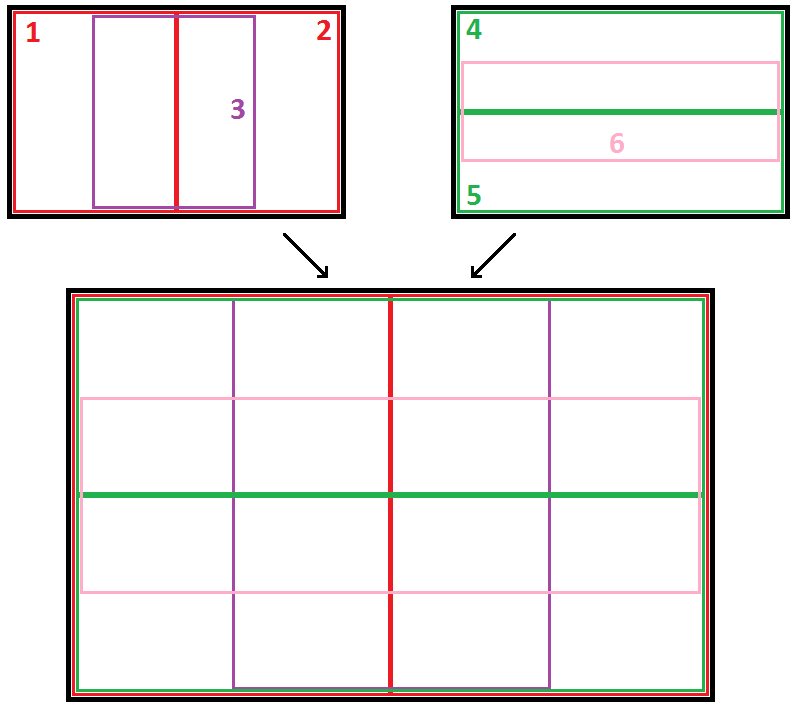
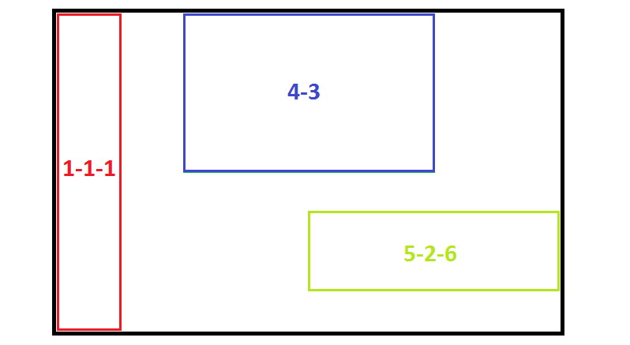
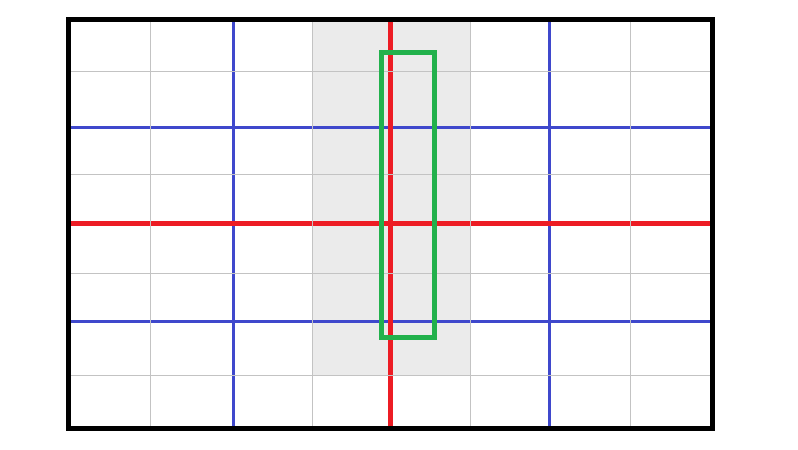
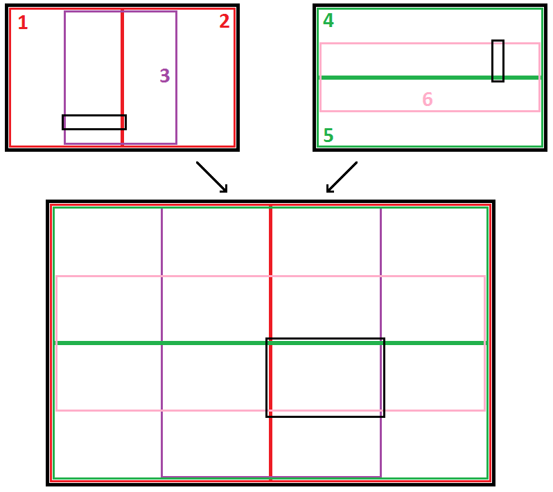
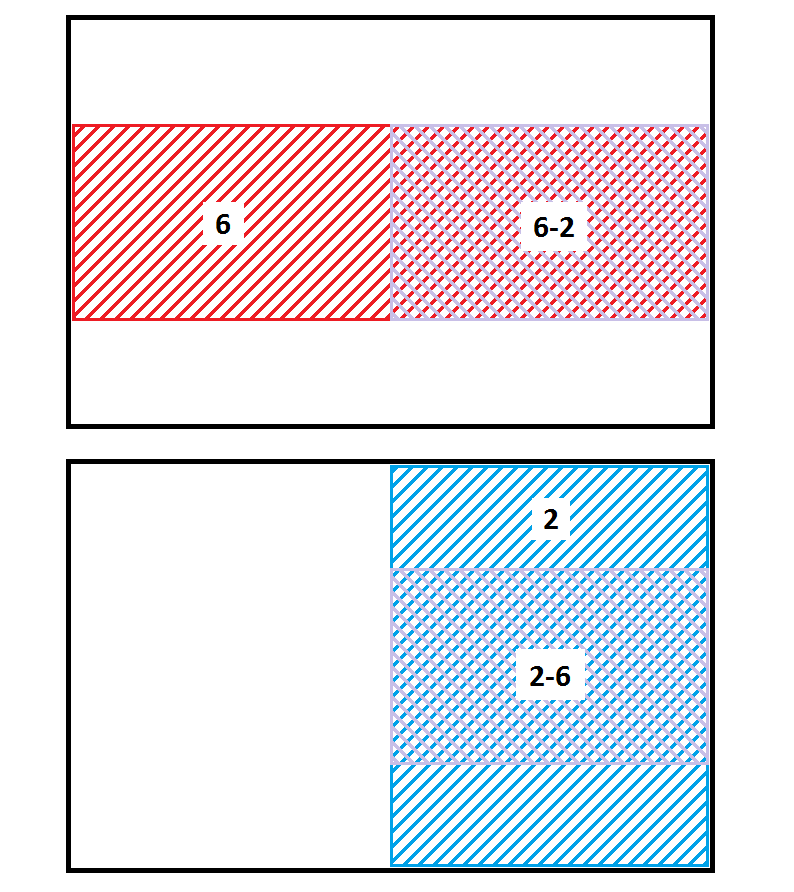

Conceptually, my solution can be divided into three parts: a spacial division tree search, which may fail to find the top k points with some small probability, followed by two possible backup solutions in case the primary search does fail. The choice of backup solution depends on the properties of the query rectangle.
The primary data structure employed was a spacial division tree with overlapping nodes. At each level, the space is divided into six regions, as shown in the diagram below. For each node in the tree (internal nodes as well as leaves), I precalculate the T points with lowest rank, and sort these points by rank.

When a rectangle is queried, I decend the tree to find the smallest node (or leaf) that fully contains the query rectangle. I then check the T precalculated points in this rectangle to find the top k that fall inside. If I fail to find k points that fall insisde the rectangle, I fall back onto one of the backup algorithms (more on this below).
There are several advantages to this division structure
-

The nodes and leaves have widely varying shapes. Following the notation x-y-z, where x is a child, and y is a child of x, and z is a child of y, we can see that node 4-3 is a roughly equal sided rectange, whereas node 1-1-1 is a tall skinny rectangle, and node 5-2-6 is a short fat rectangle. This means that for almost any query rectange, there is a node of roughly the same shape. This is imporant, because the larger the query rectangle is as a fraction of the node size, the more likely that the algorithm will be able to find k points (out of T) that fall within it.
-

It accommodates query rectangles that are pathological to a quadtree. A quadtree (or any spacial division structure without overlap) exhibits poor performance for rectangles that overlap multiple children, because either you have to a) stop recursing and check the points in the parent node or b) merge the results of the children. Option a) is likely to fail if the query rectangle is only a small fraction of the size of the parent (unless T is very large) and option b) requires recursive merging, which becomes expensive quickly. For example, in the image to the right, the green query rectangle overlaps 14 leaf nodes, whereas in the overlapping tree structure, it would fall comfortably inside node 3-3 and would be a significant fraction of that node's area.
-

It has provable, consistent behavior in the internal nodes. Recursion halts only at a leaf node, or if the none of the children of the current node fully contain the query rectangle. It is easy to see that this latter case only occurs if both of the following are true: the query rectangle width is greater than 1/4th the node width and the query rectangle height is greater than 1/4th the node height (see the image to the right). This implies that recursion only stops at an internal node when the query rectangle is at least 1/16th the area of the node. Assuming a roughly uniform distribution of points, the probability of a point falling within the query rectangle is equal to the ratio of the query rectangle to the ratio of the node rectangle, which we just proved is lower bounded by 1/16. The probability of finding at least k points (out of T) that fall inside the rectangle is given by the binomial distribution, and, for large T, is very good. For example, for the target problem with k = 20, choosing T = 500 implies a failure rate of less than 1%.
-

It is relatively memory efficient. The number of nodes in a quadtree grows as the fourth power of the depth. Since the overlapping tree structure has six divisions per node, one might expect that the number of nodes would grow as the sixth power of the depth. However, due to the nature of the overlap, many nodes can be reached by more than one path down the tree. For example, the figure at the right shows that the node 6-2 represents the same region as node 2-6. Thus, only one of those areas needs to be built out, and the other can simply point to the existing one.
The primary downside to the overlapping tree structure is that, although memory efficient despite the high degree of overlap, it cannot be divided down to leaves as small as a non-overlapping structure could achieve, given the memory limits. In my implementation, I was able to reach a depth of around 9. Since each level halves the area of the previous, this still meant that each leaf contained, on average, tens of thousands of points. Because of this, the tree often failed to find at least k points for very small rectangles. In these cases (and in the rare cases when internal nodes failed), the algorithm falls back on a slower, guaranteed solution.
As part of the initialization process, the algorithm copies and presorts the points into two lists, one sorted by x-coordinate and the other sorted by y-coordinate. If the tree search fails, the lists are searched based on the query rectangle bounds to find all candidate points whose x-coordinate or y-coordinate falls within the x or y range of the query rectangle. The list with the smaller number of points to search is then linearly searched, and the top k points are returned.
Also as part of the initialization process, another copy of the points is created and the points are "binned" into a B-by-B grid of blocks. Each bin's list of points is then sorted by rank.